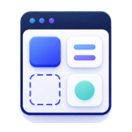

컴포넌트, 레이아웃, 리소스와 13가지 디자인 스타일을 한 곳에서.
캐러셀, 모달, 아코디언 등 다양한 UI 컴포넌트를 직접 체험해보세요.
컴포넌트 구경하기 → 📐네비게이션 바, 히어로 섹션, 특징 섹션 등 다양한 웹 레이아웃을 살펴보세요.
레이아웃 구경하기 → 🛠️CSS 프레임워크, 아이콘 라이브러리, 플레이스홀더 등 웹 개발에 유용한 리소스를 확인해보세요.
리소스 살펴보기 → 📦AI 트렌드 및 활용백과에 있는 예제파일을 확인해보세요.
파일 다운로드 → 🎨글래스모피즘부터 미니멀리즘까지 13가지 디자인 스타일 예시를 한 곳에서 비교해보세요.
스타일 구경하기 →